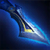
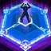
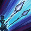
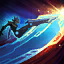
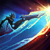

Abilities
Passive: Adaptive Defenses

Auto attacking champions gives Camille a shield of the target's damage type (Physical/Magic) based on a percentage of Camille's maximum health.
| Level | 1 | 7 | 13 |
|---|---|---|---|
| Cooldown | 20 s | 15 s | 10 s |
Q: Precision Protocol

Camille's next auto attack has bonus range, deals bonus damage and gives bonus movement speed. Can be recast. Bonus damage is significantly increased if recast after 1.5 seconds.
| Level | 1 | 2 | 3 | 4 | 5 |
|---|---|---|---|---|---|
| Cooldown | 9 s | 8.25 s | 7.5 s | 6.75 s | 6 s |
| Bonus Physical Damage | 20% AD | 25% AD | 30% AD | 35% AD | 40% AD |
| Bonus Movement Speed | 20% | 25% | 30% | 35% | 40% |
| Increased Bonus Damage | 40% AD | 50% AD | 60% AD | 70% AD | 80% AD |
W: Tactical Sweep

Camille deals damage in a cone after a short delay. The outer edge deals bonus damage and slows enemies, and heals Camille for the bonus damage.
| Level | 1 | 2 | 3 | 4 | 5 |
|---|---|---|---|---|---|
| Cooldown | 17 s | 15.5 s | 14 s | 12.5 s | 11 s |
| Base Damage | 70 | 100 | 130 | 160 | 190 |
| Outer Cone Base Bonus Damage | 5% | 5.5% | 6% | 6.5% | 7% |
| Non-Epic Monster Base Damage | 35 | 50 | 65 | 80 | 95 |
| Outer Cone Non-Epic Monster Base Bonus Damage | 2.5% | 2.75% | 3% | 3.25% | 3.5% |
E: Hookshot

Camille pulls herself to a wall and leaps a short distance off. Leaps toward enemies have increased range, and enemies hit are stunned and take damage.
| Level | 1 | 2 | 3 | 4 | 5 |
|---|---|---|---|---|---|
| Cooldown | 16 s | 15 s | 14 s | 13 s | 12 s |
| Base Damage | 80 | 110 | 140 | 170 | 200 |
| Bonus Attack Speed | 40% | 45% | 50% | 55% | 60% |
R: The Hextech Ultimatum

Camille dashes to target champion, becoming untargetable for a short period of time and locking them in the area. Her auto attacks deal bonus damage to the target.
| Level | 1 | 2 | 3 |
|---|---|---|---|
| Cooldown | 140 s | 115 s | 90 s |
| Zone Duration | 2.5 s | 3.25 | 4 s |
| Bonus Magic Damage | 5 + 4% of target's current health | 10 + 6% of target's current health | 15 + 8% of target's current health |
Mechanics
Auto Attack + Q


Camille's Q is an empowered auto attack. Empowered auto attacks can be used as an auto attack reset. This means that the second auto attack (i.e. the empowered one) can land much faster than a normal follow-up auto attack. This can be used in clutch situations where a few tenths of a second can make the difference, or in simple short trade scenarios. Note that both Camille's Q1 and Q2 are empowered auto attacks, meaning that they can both be used as an auto attack reset.
E + Q2 (With Sheen)

Camille's empowered Q2 converts the following auto attack into True damage, meaning it ignores resistances. This significantly increases the damage, as resistances can often block anywhere from 30%-60% of damage. Since only the following auto attack is converted into True damage, you want this single auto attack to do as much damage to maximise the bonus. Sheen empowers your next auto attack to do bonus damage after using an ability. After using E to engage an enemy, you may be tempted to do an auto attack reset (see Auto Attack + Q). However, doing this uses your Sheen charge, as it triggers on the first unempowered auto attack after you use your E and then goes on cooldown. On the other hand, using Q2 immediately after landing your E means that the bonus damage of Sheen is converted into True damage. This significantly increases your total damage output. Note that this also works for any item that Sheen builds into.
Q + W
 

Camille's Q grants her bonus movement speed. This is very useful overall. It can be used to chase enemies, dodge skillshots, or disengage and kite away from fights. One common way it is used is to hit the outer edge of her W. Note that the outer edge of the W deals bonus damage, slows, and heals Camille, so it is important to hit enemies on the outer edge. The bonus movement speed helps Camille move and reposition during the delay of her W to hit enemies on the edge. It can also be used to run toward enemies who are slightly out of range and hit her W.
W/E + Flash


Both Camille's W and her E can be enhanced by using Flash while casting. While both cases have their different uses, Flash is used to quickly reposition Camille and therefore her abilities to create quick and unexpected plays. Using Flash in the middle of her W cast-time allows her to quickly move to a different position, which moves her W as well. This can be used to chase down enemies who are out of range of her W, or to run away from enemies. Camille can also use Flash while dashing with her E. This allows her to reposition at the last second and change her initial target landing. This allows her to target previously untargetable enemies. Camille can Flash over enemies to hit a target behinding someone. Camille can Flash to increase the range of her E and hit enemies out of range. Camille can also Flash sideways to catch enemies off guard who might expect the E to miss. Overall, combining Flash with Camille's abilities makes her a more unpredictable and versatile champion.